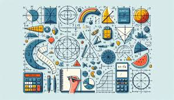

Temas selectos de matemáticas es una materia que busca repasar, reforzar y ampliar lo que ya se aprendió antes, dando a los estudiantes la oportunidad de ver temas más avanzados y un poco más difíciles; su objetivo principal es desarrollar el pensamiento lógico y analítico, para que el alumno pueda entender, plantear y resolver problemas paso a paso y con bases claras. En esta asignatura se estudian temas como álgebra más avanzada, cálculo, probabilidad, estadística, geometría analítica, matemáticas discretas y funciones, iteraciones, sucesiones, composición de funciones, entre otros temas interesantes, con la intención de que el estudiante no solo haga ejercicios, sino que realmente comprenda los conceptos y cómo se relacionan entre sí. También se trabaja la explicación y demostración de resultados, usando correctamente los símbolos y expresando ideas con claridad. La materia muestra cómo las matemáticas sirven para explicar situaciones de la vida real en áreas como la ciencia, la tecnología, la economía y la sociedad. Además, ayuda a desarrollar habilidades como buscar diferentes formas de resolver un problema, no rendirse ante ejercicios difíciles y tomar decisiones basadas en datos y razonamientos. De igual manera, fomenta que el estudiante sea más independiente en su aprendizaje, investigando, comprobando resultados y reflexionando sobre sus errores y aciertos, incluso haciendo que este mismo busque soluciones o maneras más rápidas y efectivas de buscar soluciones que sean correctas; también promueve el trabajo en equipo y el intercambio de ideas para entender mejor los temas. En general, esta asignatura fortalece la formación matemática del alumno y lo prepara para estudios superiores y para enfrentar situaciones que requieran pensar con orden, analizar con cuidado y aplicar las matemáticas de manera correcta en distintos contextos.
